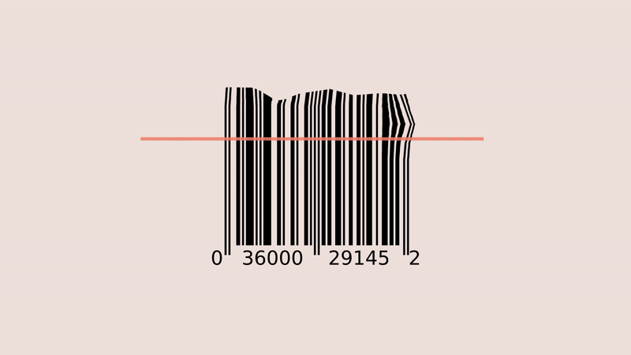
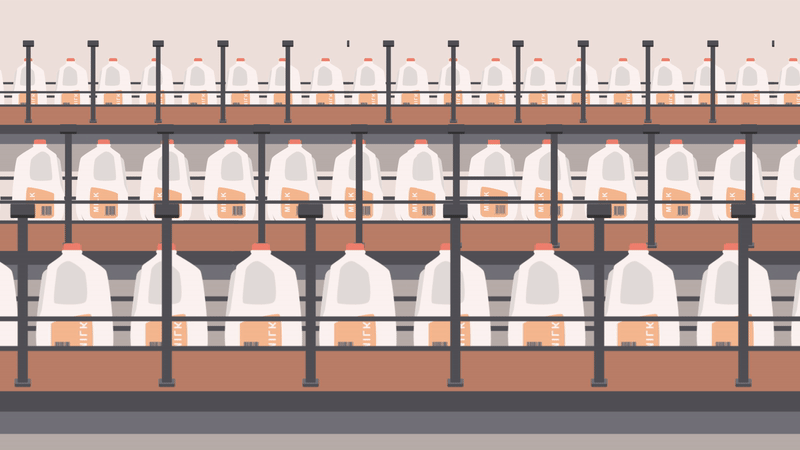
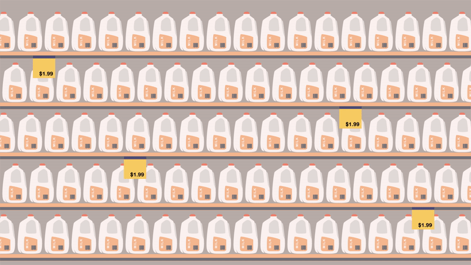
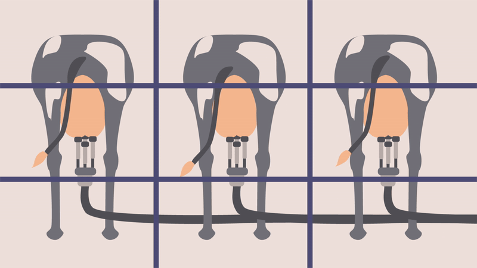
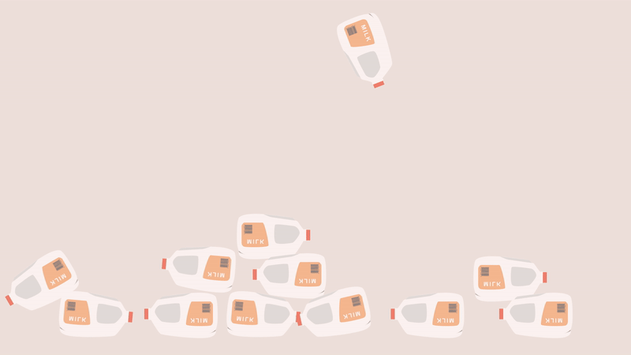

2D Animation | Adobe Illustrator, After Effects
Every year, 116 million tonnes of milk is wasted.
I would like to tell the story behind a jug of milk, addressing how much effort goes into milk production from rearing, harvesting, transporting, processing, packaging to selling. Each process involves a large number of labor and cows. People don't always recycle the plastic packaging used, which can take up to 450 years to degrade.
    